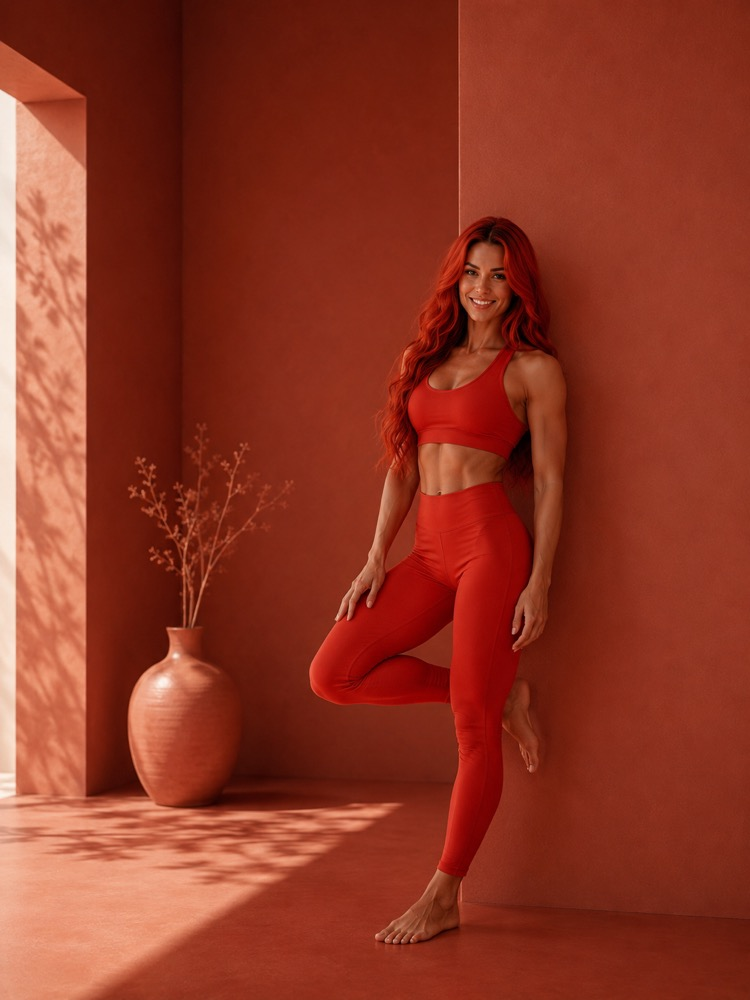
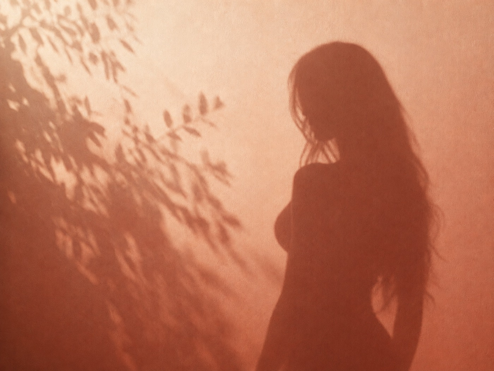
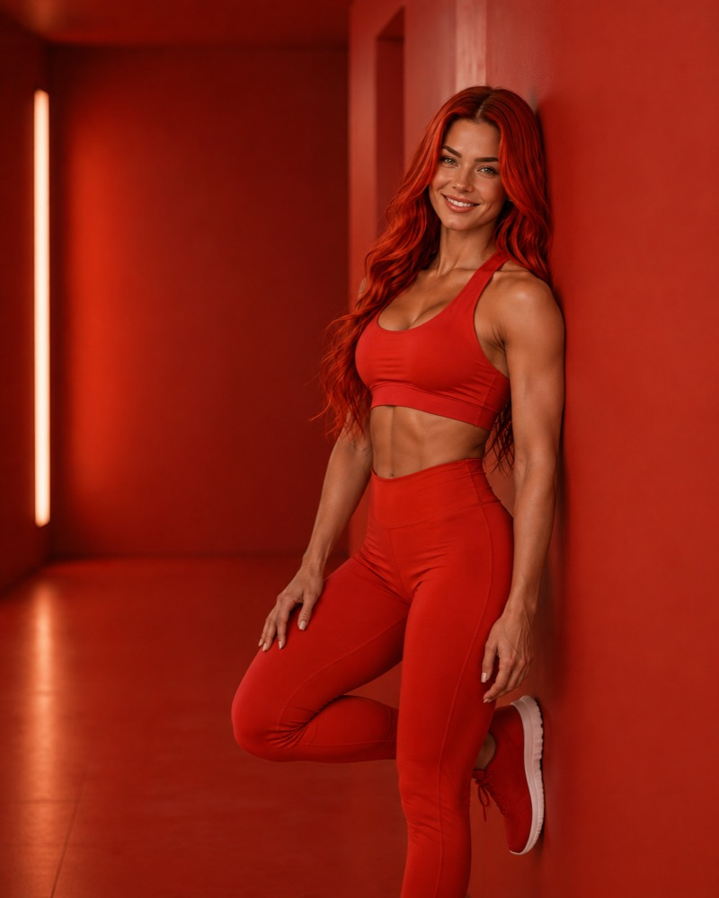

Ein Raum,
der Farbe atmen lässt.
Adrian-Structure zeigt Fotografie, Malerei und visuelle Arbeiten in einem ruhigen, kuratierten Rundgang — kein Katalog, sondern ein Ort zum Verweilen.
Zur Galerie
Freischaffende Fotografin und Malerin mit Fokus auf Farbe, Licht und Stille — tätig seit [Jahr] in [Stadt].
Ausgewählte Arbeiten
Ein Rundgang durch [Anzahl] Projekte — jede Kachel ein Fenster in einen eigenen Raum, jede Farbe eine eigene Stimmung.


[Name] arbeitet seit [Jahr] mit Farbe als Sprache — zwischen Fotografie, Malerei und stillem Beobachten.
Die Ausbildung führte über die Fotografie in die Malerei und wieder zurück — nie ganz das eine, nie ganz das andere. Die erste eigene Ausstellung entstand aus einer Serie, die eigentlich nur für die eigene Wand gedacht war.
Jedes Projekt beginnt mit einem Ort, selten mit einer Idee. Die Frage kommt später — meist erst, wenn genug Licht, Zeit und Farbe zusammengekommen sind, um etwas sichtbar zu machen, das vorher nur zu ahnen war.
ZusammenarbeitenJournal
Notizen zu Prozess, Ausstellungen und dem, was dazwischen liegt.
-
[TT. Monat JJJJ]
Weiterlesen
Über die Farbe der Erinnerung
Ein Gedanke, der sich seit Wochen hält: Farbe erinnert sich anders als das Auge. Notizen zur neuen Serie.
-
[TT. Monat JJJJ]
Weiterlesen
Dezemberlicht: Notizen aus dem Atelier
Wie tiefstehendes Winterlicht eine ganze Farbpalette verschiebt — eine kleine Materialstudie in Terrakotta.
-
[TT. Monat JJJJ]
Weiterlesen
Was von einer Ausstellungseröffnung bleibt
Ein Rückblick auf einen Abend, ein Satz, der hängen blieb, und die Stille danach, wenn die Bilder wieder allein sind.
Reden wir über Ihr Projekt.
Für Anfragen, Ausstellungsideen oder ein Gespräch über eine Zusammenarbeit — der Rundgang endet hier, aber der Austausch beginnt.
- roberto.adrian@adrian-structure.com
- Studio
- [Stadt, Land]
- Termine
- Nach Vereinbarung, Atelierbesuche per E-Mail